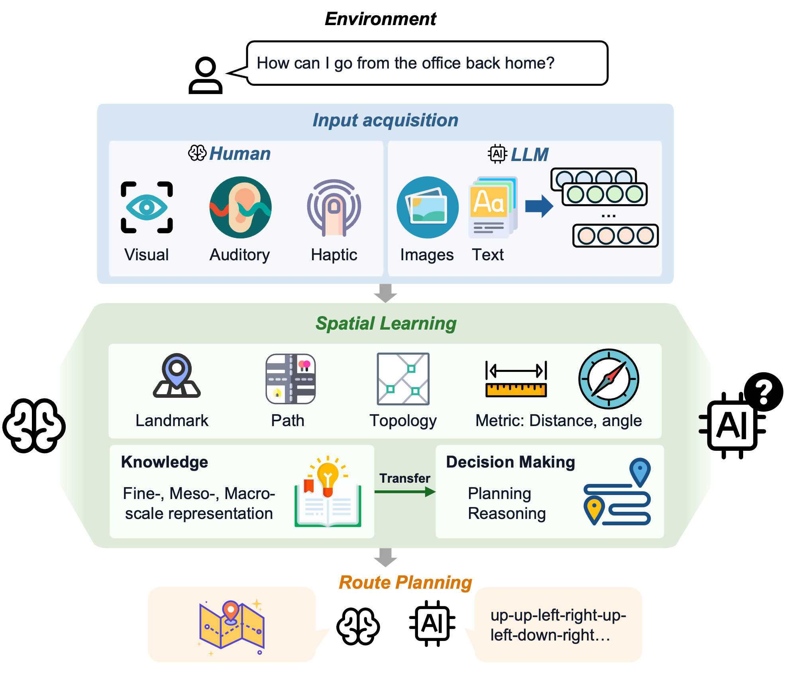
Large language models (LLMs) struggle with sequential spatial planning, but aggregate success rates provide little insight into where failures occur. We present a multi-scale benchmark that separates local passability (Fine), junction topology (Meso), and goal orientation (Macro). We evaluate three LLMs on 1,050 mazes spanning seven sizes and compare four input formats. Coordinate lists are the most effective text encoding overall.
Isolated probes assess individual spatial judgments, while one-shot planning requires the model to aggregate many such judgments into a complete route. At 10×10, complete-route success falls to 0 to 6%, while isolated-probe accuracy remains approximately 30 to 75%. Success on individual judgments therefore does not ensure reliable route generation. First errors occur mainly at the Meso (59%) and Fine (39%) scales, with Macro errors accounting for about 1%.
On 90 OpenStreetMap routes in three cities, GPT-4o’s isolated junction-choice accuracy reaches 64.7%, compared with 13.3% complete-route success. Most of its failed routes included a nonexistent street connection, often a final jump onto the destination. These findings suggest that difficulties in coordinating Fine, Meso, and Macro judgments contribute to route-planning failures.
Three modules mirror the route-planning pipeline — input acquisition, multi-scale representation, and hierarchical route planning — and a fourth tests transfer to real street networks.
Among the three text formats, structured Coordinate text is the strongest in aggregate (mean SR 34%, vs. Words 27% and Map 15%). Picture was evaluated for GPT-4o only, which solved no maze from it (0/150). The models usually emit grid-legal local moves even when complete routes fail.
At 10×10, one-shot success is 0–6% across models, while isolated-probe accuracy is roughly 30–75%. First errors occur mainly at the Meso (59%) and Fine (39%) scales, with Macro about 1%. Success on individual judgments does not ensure a successful sequence.
Assigning corridor-walking and dead-end retreat to a deterministic algorithm and querying the model only at junctions lifts GPT-4o by 70–92 percentage points at 7×7 to 15×15. Delegation roughly doubles the navigable size, but performance still declines at larger sizes.
On 90 OpenStreetMap routes, GPT-4o identified neighbors at 99.4% and chose junction exits at 64.7%, yet only 13.3% of complete routes succeeded. Of the 78 failed routes, 66 were stopped at a connection that does not exist in the street graph.
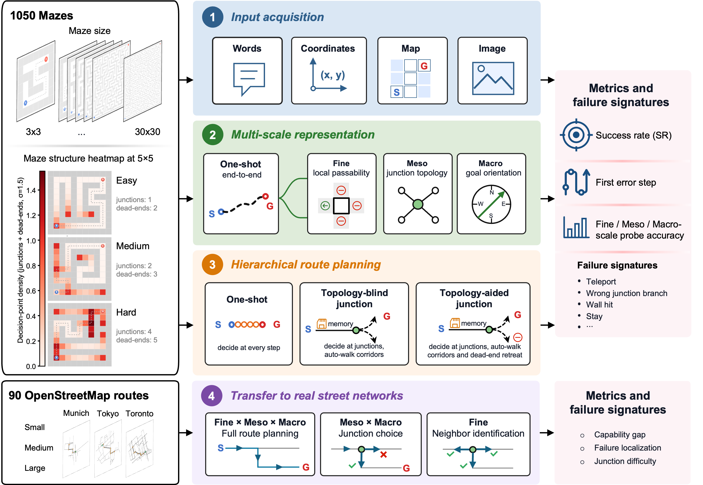
Mazes are standard two-dimensional grids generated by a mix of depth-first-search (long corridors) and randomized Prim (many branches), with fixed seeds for reproducibility. By construction they are trees: any two open cells are connected by a unique path and there are no cycles, so every junction choice is unambiguously right or wrong. Difficulty (easy / medium / hard) is controlled by the number of decision points on the solution path, dead-end density, and a confusion ratio. Every maze is pre-annotated with per-cell passable directions and cell types; along the solution path, annotations include the ideal heading and the goal-reaching branch at each junction.
Effective (open-cell) widths of 3, 5, 7, 10, 15, 20, and 30. Each thumbnail shows a representative medium-difficulty maze with its start (S), goal (G), and unique solution path.
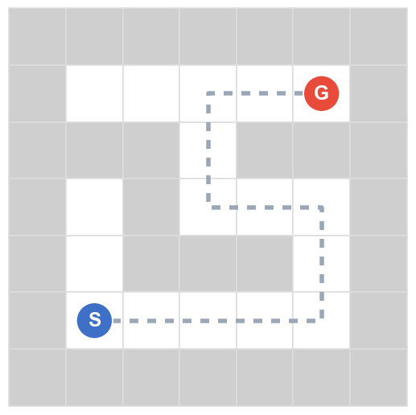
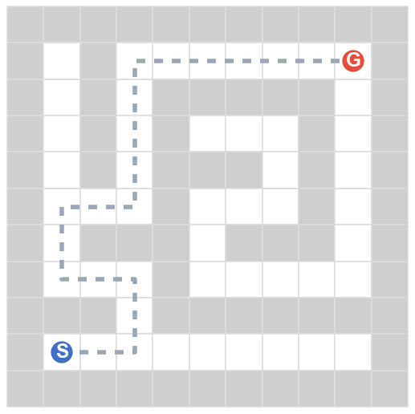
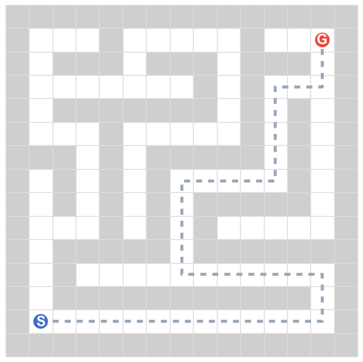
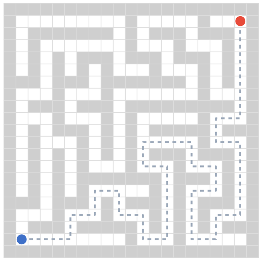
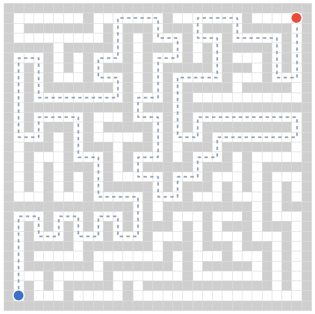
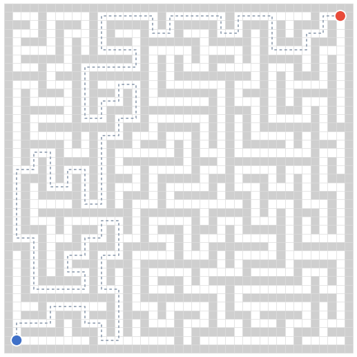
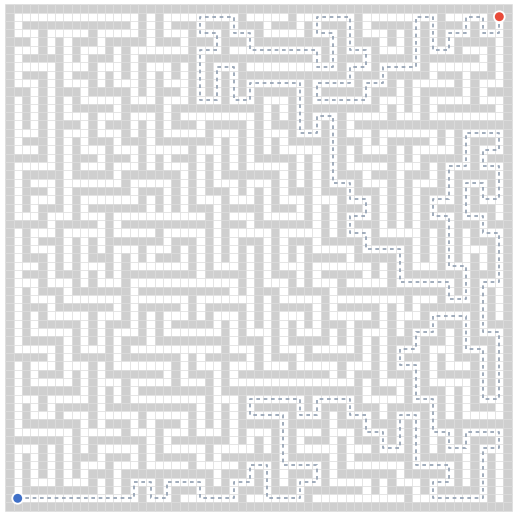
The base map is a decision-point density heatmap: path cells darken (white → deep red) where junctions and dead-ends cluster — the spots where a navigator must choose. The grey dashed line is the unique correct solution; the robot's blue trail is the route it actually takes.
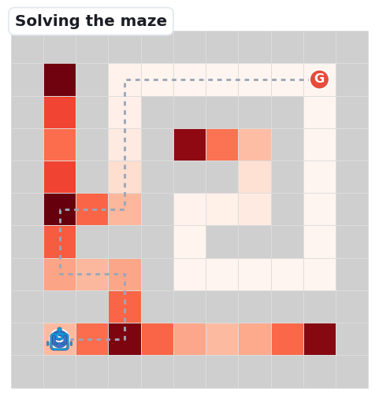
When the robot keeps Fine, Meso, and Macro reasoning aligned step after step, it follows the unique path from S to G. On small mazes the models manage this; the benchmark's question is what breaks as the maze grows.
The three clips below replay the dominant ways route planning falls apart — the same failure signatures our first-error analysis counts: Meso topological choices (59%) and Fine local execution (39%).
At a branch point the robot picks a decoy branch (green arrow marks the goal-reaching one) and ends in a dead end. Wrong junction branches are the Meso first errors, the largest share overall.
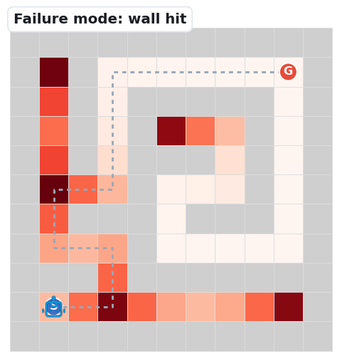
The robot emits a move into a wall cell — a local-passability error. It misreads which neighbours are open.
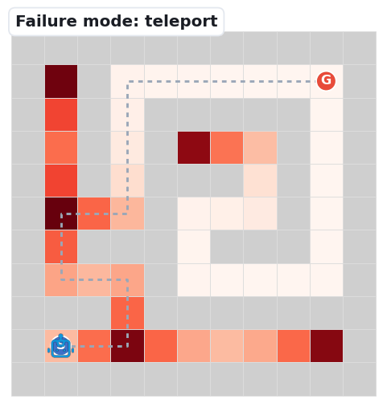
The robot jumps to a non-adjacent cell, a teleport. Fine degradation is dominated by teleports, not wall hits.
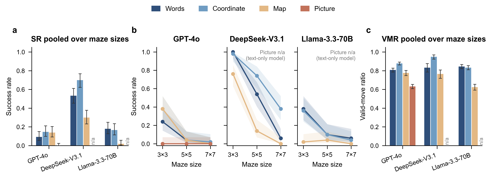
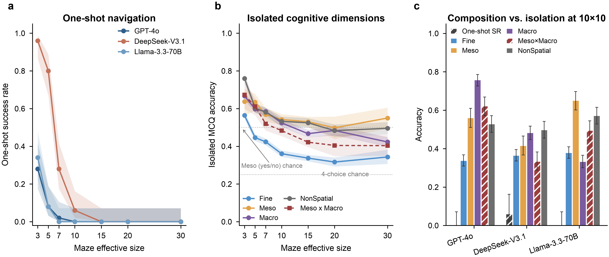
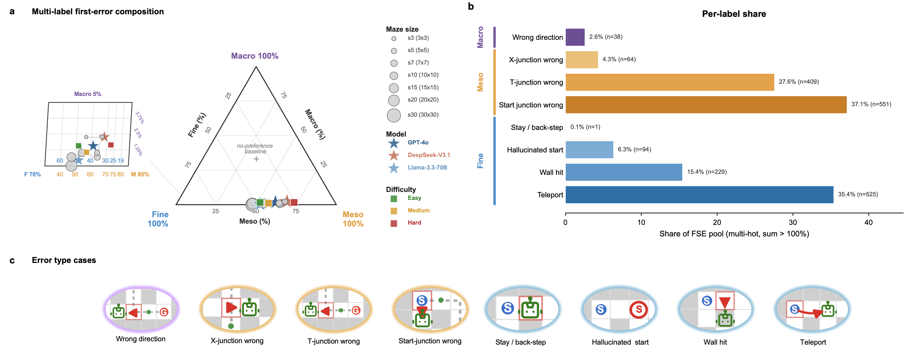
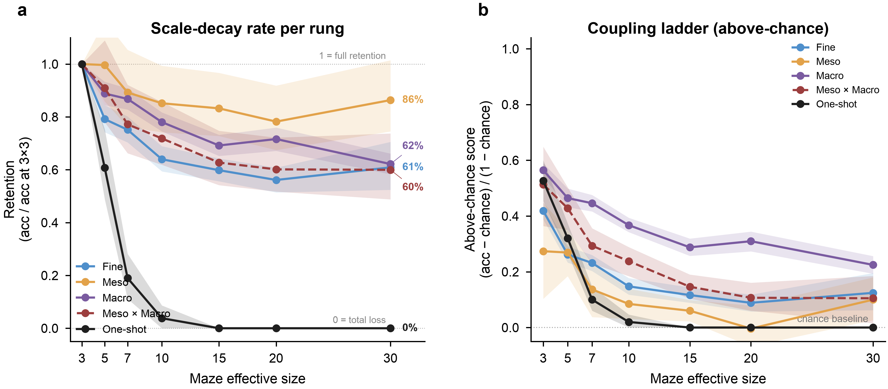
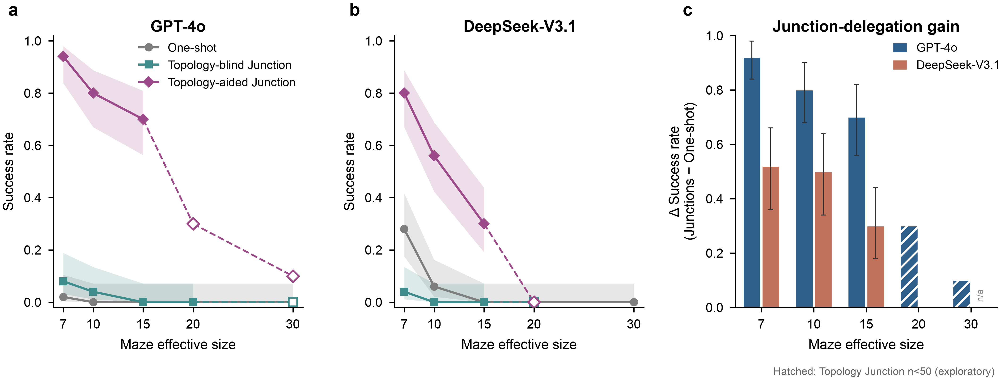
Module 4 tests whether the gap between route planning and isolated judgments carries over from tree mazes to cyclic urban street graphs: OpenStreetMap pedestrian networks for Munich, Tokyo, and Toronto. All street-network results are for GPT-4o.
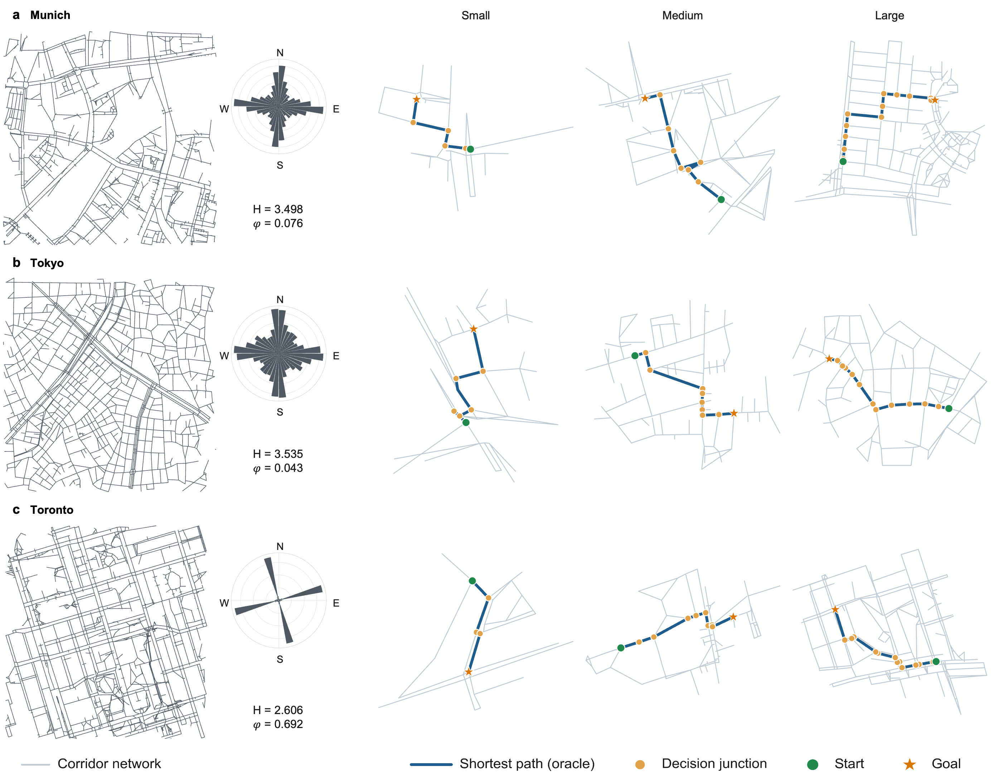
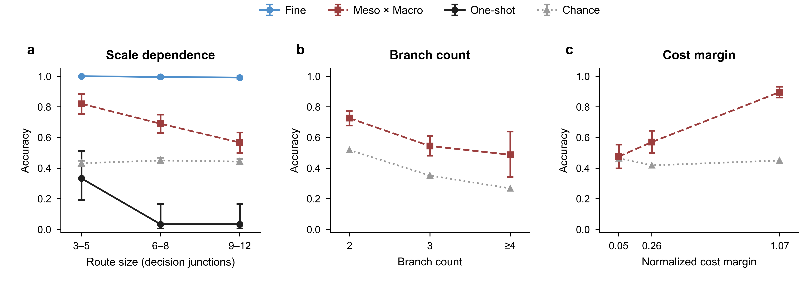
All 1,050 mazes are released as JSON, one file per effective size (150 mazes each: 50 per difficulty tier). Every maze is fully topology-annotated — usable as a drop-in spatial-reasoning benchmark for any model.
| File | Effective size | Mazes | Size | Download |
|---|---|---|---|---|
mazes_s3.json | 3×3 | 150 | 0.7 MB | download |
mazes_s5.json | 5×5 | 150 | 1.7 MB | download |
mazes_s7.json | 7×7 | 150 | 3.2 MB | download |
mazes_s10.json | 10×10 | 150 | 6.3 MB | download |
mazes_s15.json | 15×15 | 150 | 13.5 MB | download |
mazes_s20.json | 20×20 | 150 | 23.4 MB | download |
mazes_s30.json | 30×30 | 150 | 51.2 MB | download |
v0.1). The full corpus is ~100 MB; each file is one effective size (150 mazes: 50 per difficulty tier).
The frozen 90-route release the reported model calls were run on: anonymized corridor graphs in local metric coordinates, reference shortest paths, and answer keys for all 663 decision junctions. Plain JSON / JSONL, kept in the repository under road_network/.
Path in v0.2.0/ | Contents | Items |
|---|---|---|
inputs/*.graph.json | Compact graph the model reads: nodes, directed edges with lengths, start, goal | 90 |
routes/*.json | Full record: graph, reference path, decision junctions, metrics, provenance | 90 |
labels/*.labels.json | Answer key: reference path and per-junction options with route costs | 90 |
tasks/c1_routes.jsonl | One-shot route-planning tasks | 90 |
tasks/c2_junctions.jsonl | Isolated junction-choice tasks, with acceptable actions in labels/c2_junction_labels.jsonl | 663 |
tasks/c3_hybrid_episodes.jsonl | Step-wise junction-delegation episodes (no results reported in the paper) | 90 |
manifest.jsonl | Per-route metrics and SHA-256, plus dataset_card.json and audit_report.json | 90 |
| Stratum | Decision junctions per route | Routes | Junctions | Median nodes | Median length |
|---|---|---|---|---|---|
| Small | 3–5 | 30 | 121 | 36.5 | 280 m |
| Medium | 6–8 | 30 | 216 | 88 | 412 m |
| Large | 9–12 | 30 | 326 | 139.5 | 507 m |
Map data © OpenStreetMap contributors, available under the Open Database License. Origin–destination pairs from TurnBack; networks extracted with OSMnx.
We will release the maze generator, the four input encoders, the isolated-probe generators with answer keys, the junction-delegation harness, and all evaluation and plotting code. The benchmark data — mazes and real street-network routes — is available now.
@misc{jiang2026lostinaggregation,
title = {Lost in Aggregation: A Multi-Scale Diagnostic Benchmark
for LLM Route Planning},
author = {Jiang, Yuhan and Luo, Peng and Meng, Liqiu},
year = {2026},
note = {Preprint, under review},
howpublished = {\url{https://yuhanjiang415.github.io/lost-in-aggregation/}}
}